利用處理建模自動執行複雜的工作流程
GIS 操作通常包含許多步驟，上一步驟的輸出會被拿來當作下一步驟的輸入。如果你想改變輸入資料或調整操作中的參數，可能就需要手動把整套操作重新跑一遍。幸運的是，QGIS 有內建的圖形建模，可以用來定義操作中的各步驟，然後以非常簡單的方式執行。你也可以使用它來進行批次處理，把很多的輸入檔一次完成。
內容說明
本教學示範如何製作建模，從「土地利用分類」的影像檔中取出特定的分類區域。
操作流程
本練習的流程分成下列幾個步驟：
下列步驟描繪出如何處理上述操作、擺到建模內，然後執行在下載的資料上。
打開 QGIS，選擇 。
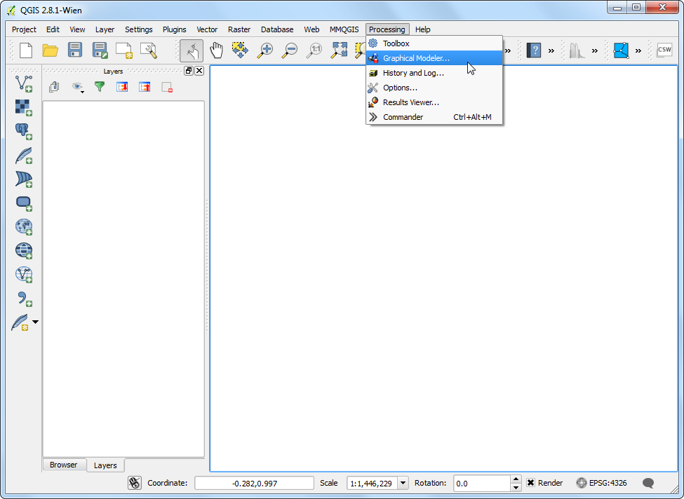
圖形建模器 的視窗分成左側的工具列和右側的主視窗。在左側的工具列中選擇 輸入 分頁，然後拖曳 + Raster layer 到主視窗中。
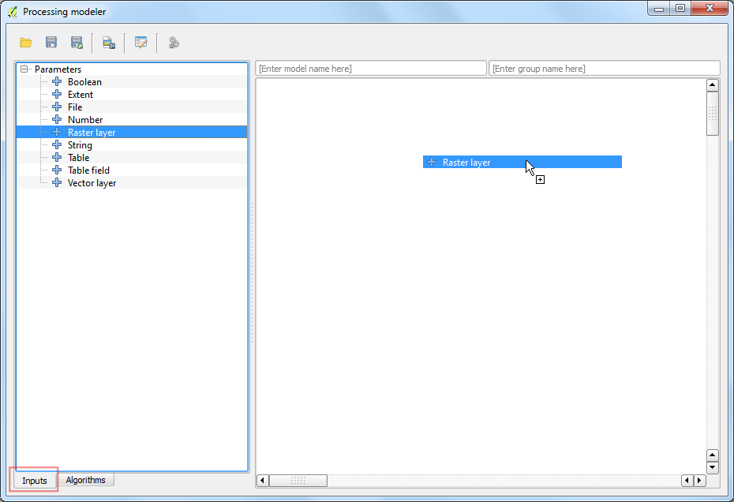
有個 參數定義 的視窗會跳出來，在 參數名稱 欄輸入 Input，然後在 必要（Required） 欄位中選擇 是，按下 確定。
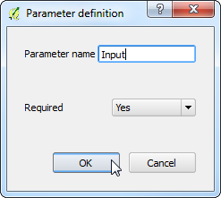
主視窗中這時會出現一個叫做 Input 的框框，它代表我們等一下要使用的土地覆蓋分類的影像資料。下一步是加上 Majority filter 的運算。點選左下角的 演算法 以切換左側分頁，然後使用搜尋功能找到此函數，它應該會放在 SAGA 的 Grid - Filter 分類中。把它拖到主視窗中。
註解
如果你找不到此運算法或其他在本教學中提到的運算法，你可能是用到了地理運算工具列的 Simplified Interface。在地理運算工具列的底部有個下拉式選單，在此改為 Advanced Interface 即可。
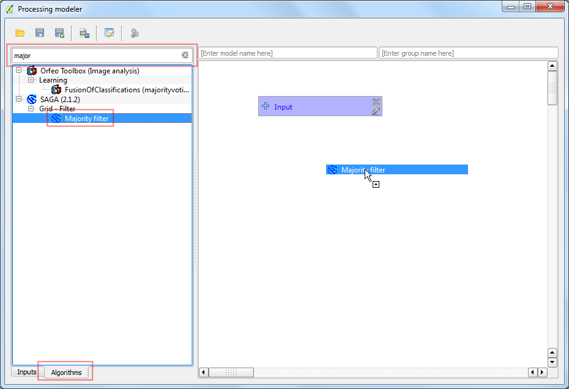
Majority Filter 的細節設定視窗會跳出，讓所有的選項保持預設，直接按下 確定。
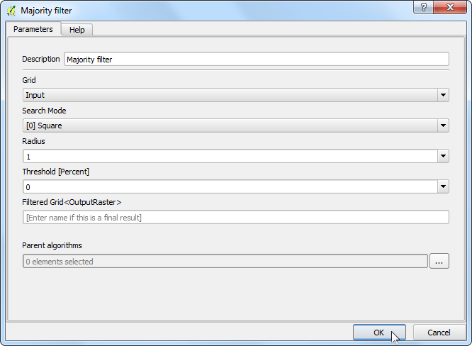
現在主畫面又多了一個 Majority Filter 的框框，除此之外還有一條線與 Input 框連在一起，代表 Majority Filter 的輸入會使用 Input 框的影像資料。下一個步驟是把 Majority Filter 的輸出轉成向量檔，因此請尋找 Polygonize (raster to vector) 演算法，把他拖曳加到主畫面中。
註解
每個框都能夠以滑鼠左鑑拖曳移動到你想要的位置，使用滑鼠滾輪則可以縮放主畫面的窗框尺寸。
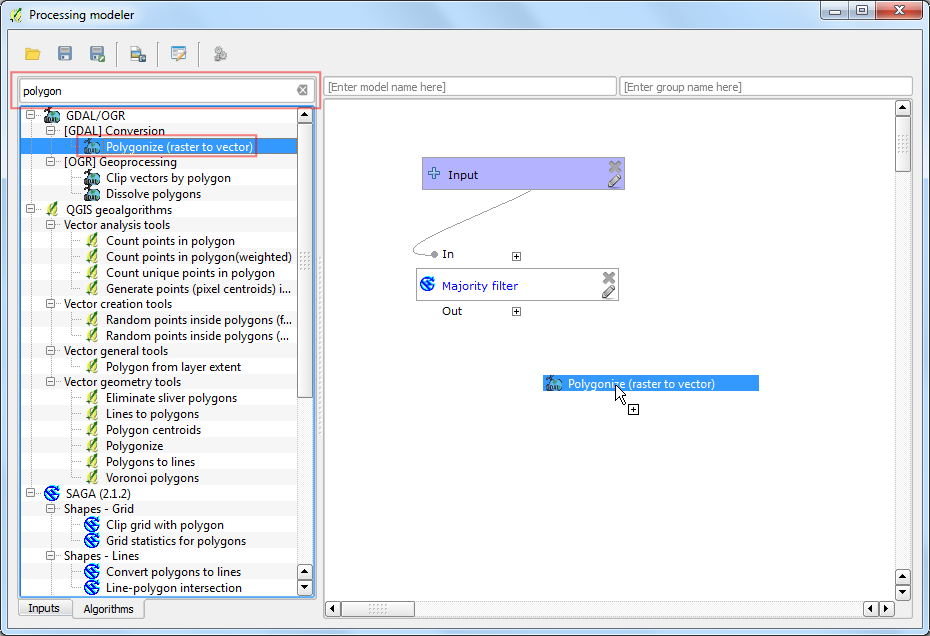
在 輸入圖層 欄位中選擇「’Filtered Grid’ 從演算法 ‘Majority Filter’」，然後按下 確定。

工作流程的最後一步驟是尋找類別值然後從符合的的圖徵中建立新圖層。找出 Extract by attribute 演算法然後拖曳到主畫面。
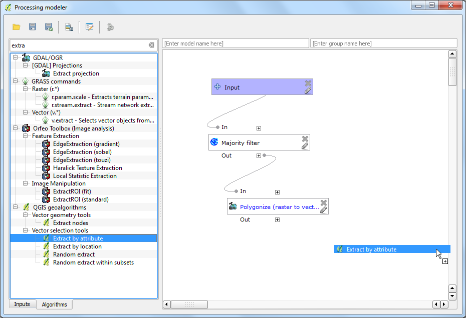
在 輸入圖層 中選擇「’Vectorized’ 從演算法 ‘Polygonize (raster to vector)」。我們預計要取出代表農地的像素，(參考 像素值列表 後可知)類別像素值是 12。選取屬性 欄位輸入 DN，值 輸入 12。由於運算的輸出就是我們的最終結果，這裡需要為輸出檔命名才行，因此在 Output 欄位中輸入 vectorized_class。
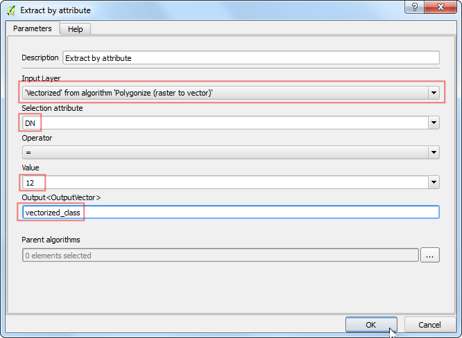
在 模型名稱 中輸入 vectorize，群組名稱 則輸入 raster，然後按下 儲存 鈕。

模型取名為 vectorize 然後按下 存檔。

現在是測試模型的時間了！打開 QGIS，選擇 。

選擇剛下載的 LC_hd_global_2001.tif.gz 後按下 開啟舊檔。影像載入後，選擇 :menuselection:`地理運算 –> 工具箱。

在 目錄下可以找到我們剛才建立的模型，點兩下即可執行此模型。

Input 選擇 LC_hd_global_2001，然後按下 Run。
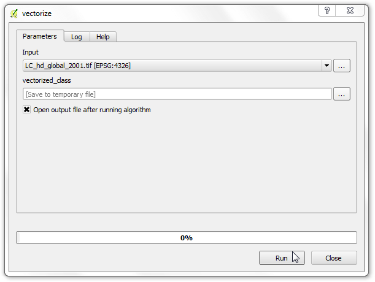
你會看到所有的步驟開始自動執行，無須人工指定任何東西。處理完畢後，新的圖層 vectorized_class 會加進 QGIS 中。讓我們再稍微改良一下此模型吧，在 vectorize 模型上按右鍵，選擇 編輯模型。
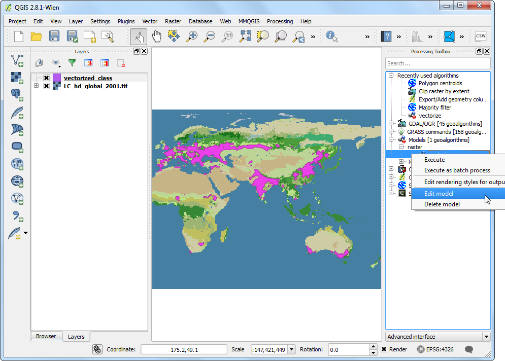
在步驟 12 中，我們指定了 12 當作類別值，但我們也可以設定為這個值是可以讓模型使用者自由更動的初始輸入值。因此，切換到 輸入 分頁，然後拖曳 + String 到模型中。

參數名稱 輸入 Class，預設值 輸入 12。

現在我們要更改 Extract by attribute 演算法，讓它能接受此輸入值，而不是原本內定的值。點選 Extract by attribute 框旁邊的 編輯 按鈕。

點選 值 欄位旁的下拉鈕然後選擇 Class，接著按下 確定。

你會看到 Extract by attribute 運算法這下就使用了 2 個輸入框。在建模視窗內，有個捷徑可以讓你快速測試執行此模型，請點選工具列上的 執行模型 按鈕。

注意現在模型視窗內多了一個稱為 Class 的欄位，請在其中輸入 16，然後點選 Run。

處理完成後，我們就完成了把所有像素值為 16 的點取出成為向量檔的工作了，而且這一切只需要點一下「執行」鈕即可。
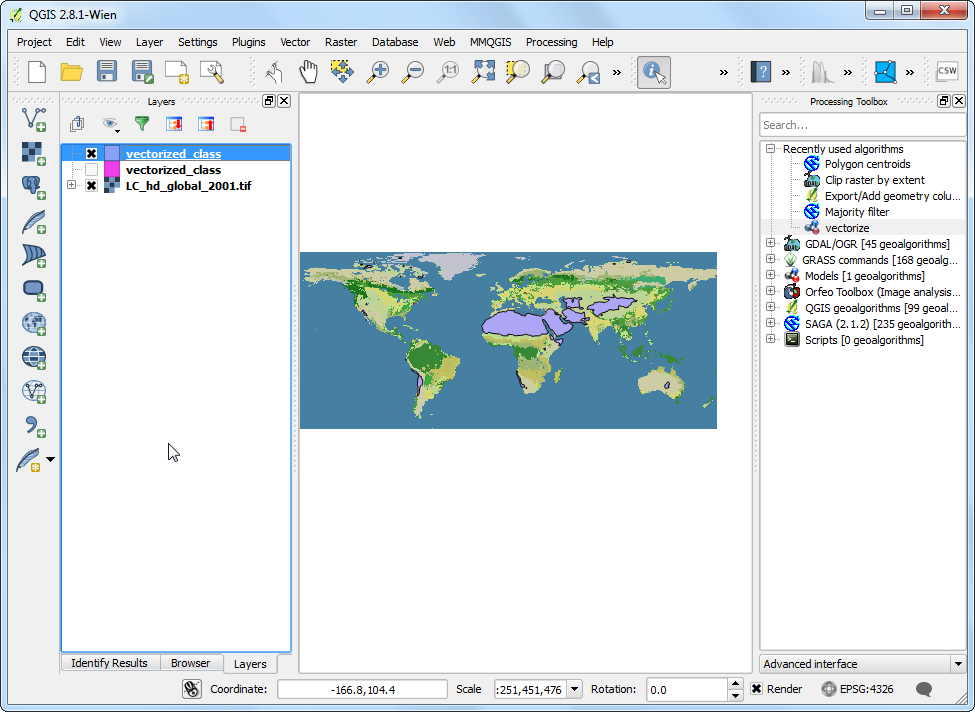
現在模型已經完成，可以很簡單的使用在新的影像圖層上。點選 ，然後選擇 LC_hd_global_2012.tif.gz 檔案，然後在 地理運算工具箱 面板中選擇 vectorize 模型。
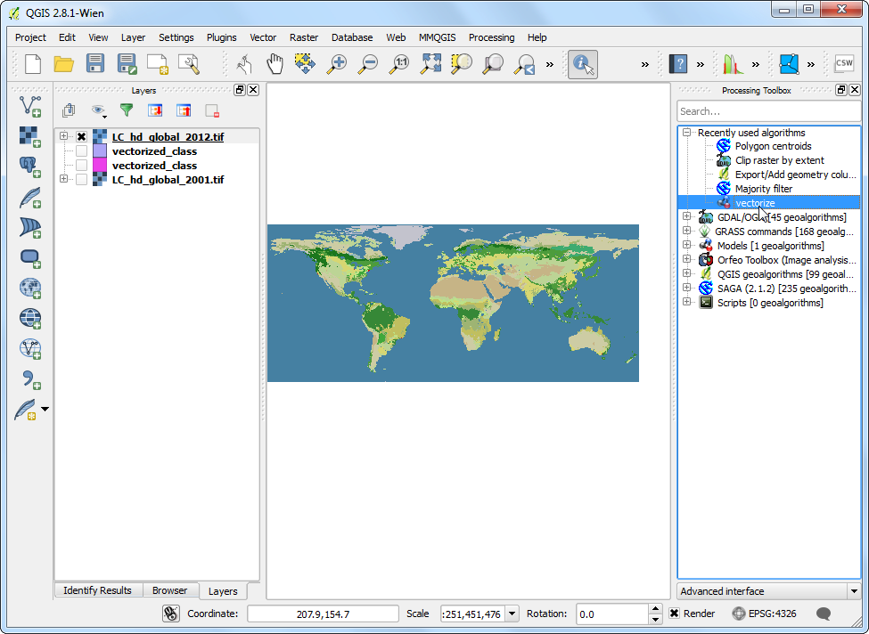
Input 選擇 LC_hd_global_2012，然後按下 Run。

新的輸出檔載入後，就可以比較一下農地在 2001 和 2012 年間的改變情況了。

為你的模型加上說明文件一向是個好主意。處理建模具有內建的 說明編輯器，可以讓你直接在模型中加入一些使用提示。在 vectorize 模型上以右鍵點選進入 編輯模型。
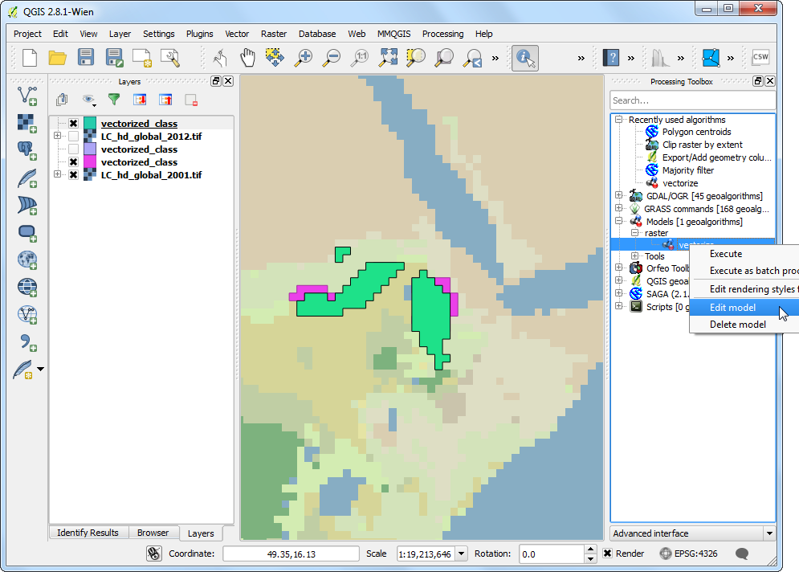
按下工具列上的 編輯模型說明 鈕，

在 說明編輯器 視窗中，可以選取任何在 選取欲編輯的元素 欄位中出現的東西，然後在右側的 元素描述 中打上說明文字。按下 確定 後，說明文字就可以在你執行模型時出現的 說明 分頁中找到。
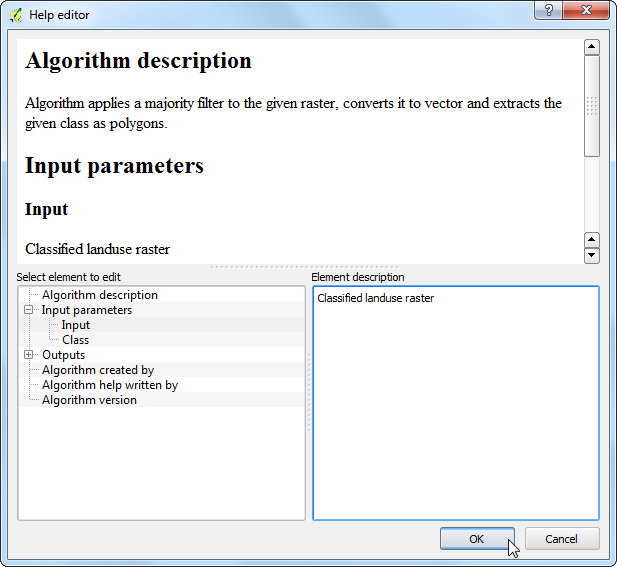
模型讓你只需要定義你的流程一次，但是可以執行很多次，藉以省下不少時間。你甚至可以把它分享給其他使用者，模型的儲存位置是在 .qgis2 目錄底下，只要傳送 .model 檔案給其他人，然後再擺到正確的目錄下，它就會出現在 地理運算工具箱 中。模型存放目錄的絕對路徑依作業平台而異：(記得用你的使用者名稱換掉 username)
Windows
c:\Users\username\.qgis2\processing\models\
Mac
/Users/username/.qgis2/processing/models/
Linux
/home/username/.qgis2/processing/models/